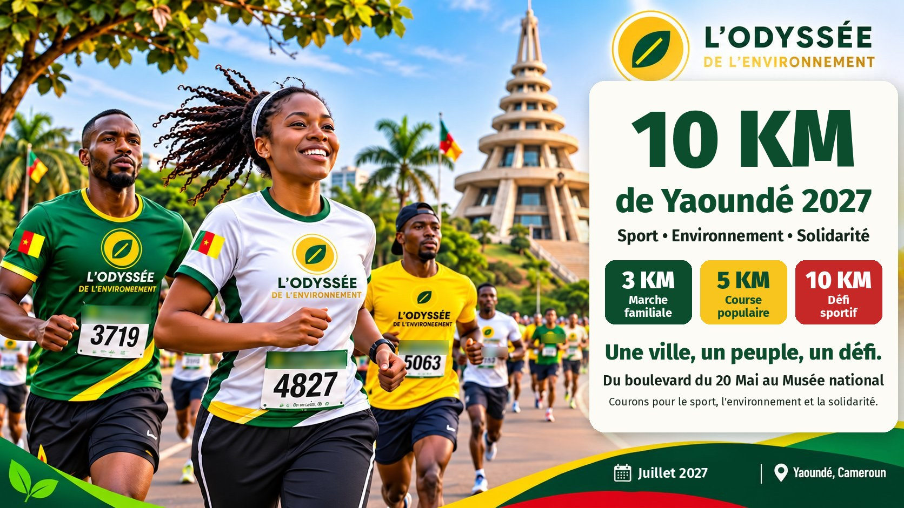
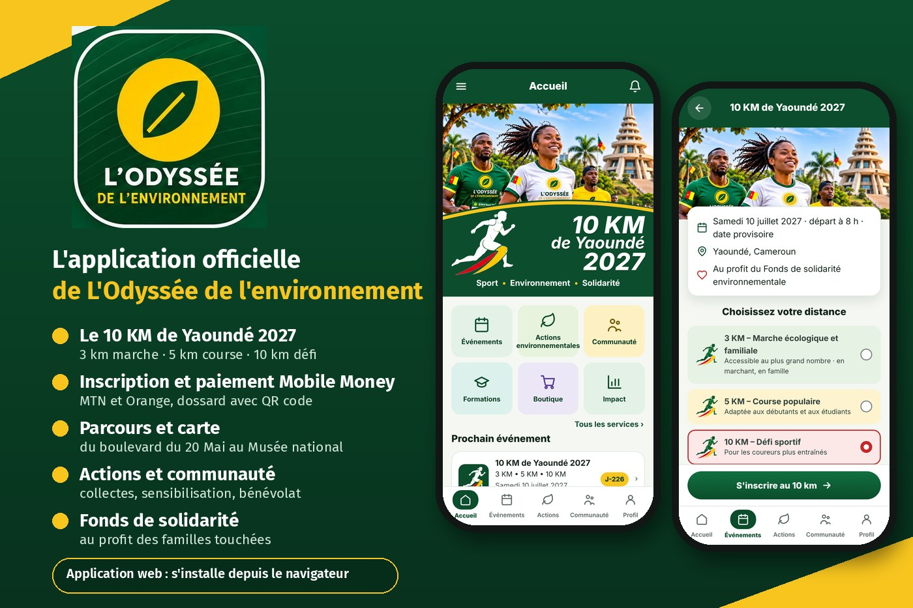
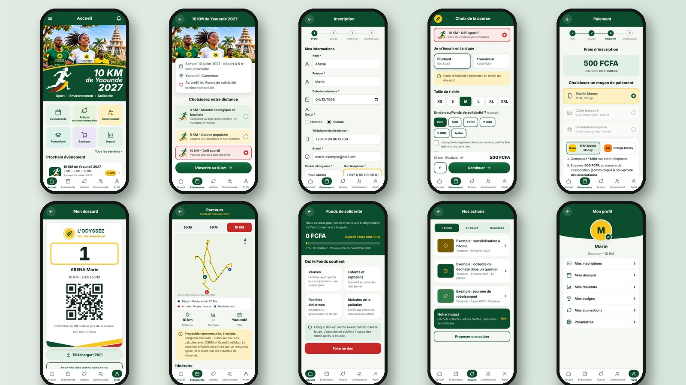

3km
Marche écologique et familiale
Accessible au plus grand nombre : enfants, familles, aînés. On marche à son rythme.
500 FCFA pour tous

Samedi 10 juillet 2027 · départ à 8 h · date provisoire
Nous courons pour les veuves, les enfants et les familles frappés par la destruction de l'environnement.
Accessible au plus grand nombre : enfants, familles, aînés. On marche à son rythme.
Adaptée aux débutants et aux étudiants, pour une première course en ville.
Pour les coureurs plus entraînés, du boulevard du 20 Mai au Musée national.
Le 10 KM de Yaoundé est organisé pour venir en aide aux veuves, aux enfants et aux familles frappés par la destruction de l'environnement : inondations, glissements de terrain, pollution.
Ensemble, agissons pour un avenir durable.
Le 10 KM de Yaoundé est le premier événement hébergé dans Odyssée Connect, l'application qui rassemble citoyens, associations, entreprises et partenaires du réseau Odyssée.

T-shirts, polos, joggings, casquettes et sacs aux couleurs de L'Odyssée de l'environnement. Pour courir, encourager et soutenir la cause.
Inscrivez une équipe de 10 coureurs, devenez partenaire ou affectez votre soutien au Fonds de solidarité.
Le Fonds de solidarité environnementale, raison d'être du 10 KM de Yaoundé : soutenir les personnes frappées par la destruction de l'environnement.
Une partie des fonds collectés, issus des inscriptions payantes et des contributions des partenaires, alimente le Fonds de solidarité environnementale. Pour la première édition, son objectif est de 5 000 000 FCFA, réunis grâce aux inscriptions, aux dons et aux contributions des partenaires.
Chaque franc confié au Fonds doit arriver à ceux qui en ont besoin, de façon vérifiable.
Trois distances — 3 km de marche écologique et familiale, 5 km de course populaire et 10 km de défi sportif — solidaires et zéro déchet, le samedi 10 juillet 2027 (date provisoire).
Le 10 KM de Yaoundé pourra réunir jusqu'à 10 000 participants sur trois distances : le 3 km, marche écologique et familiale accessible au plus grand nombre, le 5 km, course populaire adaptée aux débutants et aux étudiants, et le 10 km, défi sportif pour les coureurs plus entraînés. La date officielle sera annoncée après validation des parcours par les autorités.
Elle est organisée par L'Odyssée de l'environnement au Cameroun, association déclarée à Yaoundé. Le réseau Odyssée a organisé le Green Hackathon Yaoundé 2026 et prépare sa deuxième édition pour juillet 2027.
La raison d'être de la course : soutenir les victimes de la destruction de l'environnement.
Une course zéro déchet, un parcours nettoyé et des déchets collectés, triés et comptés.
Un rendez-vous annuel ouvert à tous : étudiants, travailleurs, familles, équipes d'entreprise.
7 500 000 FCFA sont consacrés au volet environnemental, trois fois plus qu'aux prix sportifs. Ses résultats seront mesurés et publiés après la course.
Le 10 km part du boulevard du 20 Mai et arrive au Musée national, où se tient le village de l'Odyssée. Il passe par le rond-point Nlongkak, Elig-Essono et le carrefour Warda. Le 5 km part d'Elig-Essono et le 3 km de l'avenue Ahmadou-Ahidjo, sur la fin du même parcours. C'est une proposition : la distance sera mesurée officiellement et le tracé validé par les autorités municipales et les services de sécurité.
Ouverture des inscriptions le 1er décembre 2026, en ligne et dans l'application officielle.
| Épreuve et public | Tarif | Précision |
|---|---|---|
| 10 km · Étudiants | 500 FCFA | Défi sportif, chronométré, prix étudiants |
| 10 km · Travailleurs | 1 000 FCFA | Défi sportif, chronométré |
| 5 km · Course populaire | 500 FCFA | Pour tous, adaptée aux débutants et aux étudiants |
| 3 km · Marche écologique et familiale | 500 FCFA | Pour tous, accessible au plus grand nombre |
| Entreprises | 100 000 FCFA | Par équipe de 10 coureurs, sur la distance de leur choix, avec un challenge entreprises |
Paiement par Orange Money ou MTN MoMo. Une partie des inscriptions payantes alimente le Fonds de solidarité. Les places sont ouvertes par tranches : une première tranche de 3 000 places, puis de nouvelles places au fil des inscriptions. Ouverture : 1er décembre 2026.
2 500 000 FCFA de prix sur le 10 km, répartis pour récompenser aussi les étudiants. Le 5 km et la marche de 3 km n'ont pas de classement : chaque participant reçoit sa médaille.
| Catégorie | 1er | 2e | 3e | 4e–10e |
|---|
Montants en FCFA, sous réserve du règlement officiel. Carte d'étudiant exigée pour recevoir un prix étudiant.
Inscription, paiement par mobile money et dossard numérique : tout se fait dans Odyssée Connect, l'application du réseau Odyssée.

Ensemble, agissons pour un avenir durable. L'application du réseau Odyssée, et la porte d'entrée du 10 KM de Yaoundé.
Odyssée Connect rassemble citoyens, associations, entreprises et partenaires autour des actions du réseau Odyssée. Elle n'est pas limitée à un seul événement : le 10 KM de Yaoundé 2027 est le premier événement qu'elle accueille, et d'autres services et projets s'y ajouteront, dans plusieurs pays.
Avec votre numéro de téléphone et un code reçu par SMS. Choisissez votre distance : 3, 5 ou 10 km.
Orange Money ou MTN MoMo, en toute sécurité. Inscription confirmée dès la validation du paiement.
Un numéro et un QR code à présenter au retrait de votre dossard.
Parcours des trois distances, règlement, horaires, consignes de santé et zéro déchet, notifications.
Votre temps et les classements par distance et par catégorie, dès leur validation.
Position des coureurs sur la carte, points d'eau et postes de secours, avec votre accord.
Odyssée Connect sera d'abord une application web installable sur Android et sur iPhone, disponible à l'ouverture des inscriptions au 10 KM. Les écrans présentés sont des maquettes ; noms, temps et montants y sont fictifs.
Le 10 KM, d'autres courses et des défis, dans plusieurs villes.
Collectes, recyclage, reboisement : trouvez une action près de chez vous et participez.
Devenez ambassadeur Odyssée et rejoignez les équipes de bénévoles.
Les nouvelles du réseau et des projets soutenus.
Les résultats environnementaux et sociaux des actions, publiés et vérifiables.
Tout ce qu'il faut savoir avant le jour J. Les détails seront complétés à l'ouverture des inscriptions.
Première fois sur 10 km ? Suivez notre plan d'entraînement de 8 semaines.
Les horaires précis seront publiés avec le règlement officiel.
Le règlement officiel (conditions d'âge, catégories, chronométrage, réclamations, sécurité) sera publié ici à l'ouverture des inscriptions. En vous inscrivant, vous l'accepterez.
Sans bénévoles, pas de course. Rejoignez l'équipe qui fait vivre le 10 KM de Yaoundé et sa cause.
Écrivez-nous en indiquant votre nom, votre téléphone, votre quartier et la mission qui vous intéresse. Nous reviendrons vers vous avant la course.
contact@odyssee-env.org
Objet du message : « Bénévole 10 KM de Yaoundé »
Associez votre entreprise à une course solidaire, environnementale et sportive, avec des contreparties claires et un bilan chiffré.
Cinq niveaux, chacun doublant le précédent. Une seule formule Partenaire titre est ouverte.
Partenaires techniques et médias bienvenus : eau et boissons non alcoolisées, équipements, transport, santé, chronométrage, couverture médiatique. Tout ou partie d'une contribution peut être affectée au Fonds de solidarité.
Les partenaires de la première édition seront présentés ici dès la signature des conventions. Aucun logo n'est publié sans accord écrit.
contact@odyssee-env.org
Objet du message : « Partenariat 10 KM de Yaoundé »
Les réponses aux questions les plus courantes sur la course, les inscriptions et le Fonds de solidarité.
Communiqué, informations clés et contact presse du 10 KM de Yaoundé 2027.
Yaoundé accueillera en 2027 la première édition du 10 KM de Yaoundé, une course solidaire au profit des victimes de la destruction de l'environnement
L'association L'Odyssée de l'environnement au Cameroun annonce la première édition du 10 KM de Yaoundé, une course à pied de 10 kilomètres prévue le samedi 10 juillet 2027 (date provisoire) dans la capitale.
La course a une raison d'être : venir en aide aux veuves, aux enfants et orphelins, aux familles sinistrées et aux personnes malades frappés par la destruction de l'environnement. Une partie des fonds collectés alimente un Fonds de solidarité environnementale, dont l'objectif est de 5 000 000 FCFA pour la première édition. Ses bénéficiaires seront désignés selon des critères publics et son emploi fera l'objet d'un bilan public.
Organisée selon des règles « zéro déchet », la course pourra réunir jusqu'à 10 000 participants sur trois distances : une marche écologique et familiale de 3 km, une course populaire de 5 km et un défi sportif de 10 km, du boulevard du 20 Mai au Musée national. L'inscription sera de 500 FCFA pour les étudiants, pour le 5 km et pour le 3 km, et de 1 000 FCFA pour les travailleurs sur le 10 km.
La date officielle et le parcours seront annoncés après validation par les autorités compétentes. Informations : contact@odyssee-env.org.
| Événement | 10 KM de Yaoundé, première édition |
| Date | Samedi 10 juillet 2027, départ à 8 h (date provisoire, à confirmer par les autorités) |
| Lieu | Yaoundé, Cameroun |
| Cause | Fonds de solidarité environnementale : objectif de 5 000 000 FCFA |
| Participants | Jusqu'à 10 000 sur trois distances : 3 km, 5 km et 10 km |
| Organisateur | L'Odyssée de l'environnement au Cameroun |
Interviews, accréditations, visuels en haute définition.
contact@odyssee-env.org
Objet du message : « Presse 10 KM de Yaoundé »
Un plan de 8 semaines pour passer de 30 minutes de course à la ligne d'arrivée du 10 KM de Yaoundé.
Ce plan s'adresse à celles et ceux qui peuvent déjà courir environ 30 minutes sans s'arrêter. Trois séances par semaine suffisent.
Consultez un médecin avant de commencer si vous n'avez pas fait de sport depuis longtemps ou si vous avez un doute sur votre santé. Courez tôt le matin ou en fin de journée, et buvez régulièrement.
| Semaine | Séance 1 | Séance 2 | Sortie longue |
|---|
Qui édite ce site, et comment nous protégeons vos données personnelles.
L'Odyssée de l'environnement au Cameroun, association déclarée à Yaoundé. Récépissé de déclaration n° à compléter. Siège : adresse à compléter. Contact : contact@odyssee-env.org.
Responsable de la publication : nom du président de l'association.
Hébergeur : à préciser lors de la mise en ligne.
Les textes, illustrations et le nom « 10 KM de Yaoundé » appartiennent à l'association. Toute reproduction demande son accord écrit. Les logos des partenaires restent la propriété de leurs titulaires.
Nous traitons les données personnelles dans le respect de la loi n° 2024/017 du 23 décembre 2024 relative à la protection des données à caractère personnel au Cameroun.
Le site ne dépose aucun cookie publicitaire et n'utilise aucun outil de mesure d'audience. Il retient uniquement, dans votre navigateur, la langue que vous avez choisie.
Les informations sur les bénéficiaires du Fonds sont strictement confidentielles, réservées au comité de sélection, et ne sont jamais publiées de façon nominative.
Vous pouvez demander l'accès à vos données, leur rectification ou leur suppression en écrivant à contact@odyssee-env.org. Vous pouvez aussi saisir l'Autorité de protection des données à caractère personnel du Cameroun.
Dernière mise à jour : novembre 2026.
Une question, une proposition de partenariat, une envie d'aider ? Écrivez-nous.
Inscriptions, règlement, retrait des dossards.
contact@odyssee-env.org
Dossier de partenariat, accréditations presse. Espace presse
contact@odyssee-env.org
Missions et candidatures.
contact@odyssee-env.org
L'Odyssée de l'environnement au Cameroun, association déclarée à Yaoundé, membre du réseau L'Odyssée de l'environnement.
Site du réseau : www.odyssee-env.org
Saturday 10 July 2027 · start at 8 a.m. · provisional date
We run for the widows, children and families struck by the destruction of the environment.
Open to as many people as possible: children, families, elders. Walk at your own pace.
Suited to beginners and students, for a first race in the city.
For more trained runners, from the Boulevard du 20 Mai to the National Museum.
The Yaoundé 10 KM exists to help widows, children and families struck by the destruction of the environment: floods, landslides, pollution.
Together, let's act for a sustainable future.
The Yaoundé 10 KM is the first event hosted in Odyssée Connect, the app that brings together citizens, associations, companies and partners of the Odyssée network.
T-shirts, polos, tracksuits, caps and bags in the colours of L'Odyssée de l'environnement. To run, cheer and support the cause.
Enter a team of 10 runners, become a partner or allocate your support to the Solidarity Fund.
The Environmental Solidarity Fund, the reason the Yaoundé 10 KM exists: supporting people struck by the destruction of the environment.
Part of the funds raised, from paid registrations and partner contributions, goes to the Environmental Solidarity Fund. For the first edition, its target is 5,000,000 CFA francs, raised through registrations, donations and partner contributions.
Every franc entrusted to the Fund must reach those who need it, in a way that can be checked.
Three distances — a 3 km eco family walk, a 5 km popular run and a 10 km sports challenge — for charity and zero waste, on Saturday 10 July 2027 (provisional date).
The Yaoundé 10 KM can bring together up to 10,000 participants over three distances: the 3 km eco family walk, open to as many people as possible, the 5 km popular run, suited to beginners and students, and the 10 km sports challenge for more trained runners. The official date will be announced once the authorities have approved the routes.
It is organised by L'Odyssée de l'environnement au Cameroun, an association registered in Yaoundé. The Odyssée network organised the Green Hackathon Yaoundé 2026 and is preparing its second edition for July 2027.
The reason the race exists: supporting the victims of environmental destruction.
A zero-waste race, a cleaned-up route, and waste collected, sorted and counted.
A yearly event open to all: students, workers, families, company teams.
7,500,000 CFA francs go to the environmental programme, three times more than to sports prizes. Its results will be measured and published after the race.
The 10 km starts on the Boulevard du 20 Mai and finishes at the National Museum, home of the Odyssée village. It runs through the Nlongkak roundabout, Elig-Essono and the Warda crossroads. The 5 km starts at Elig-Essono and the 3 km on Avenue Ahmadou-Ahidjo, on the last part of the same route. This is a proposal: the distance will be officially measured and the route approved by the city authorities and the security services.
Registration opens on 1 December 2026, online and in the official app.
| Race and who | Fee | Details |
|---|---|---|
| 10 km · Students | 500 CFA | Sports challenge, timed, student prizes |
| 10 km · Workers | 1,000 CFA | Sports challenge, timed |
| 5 km · Popular run | 500 CFA | For everyone, suited to beginners and students |
| 3 km · Eco family walk | 500 CFA | For everyone, open to as many people as possible |
| Companies | 100,000 CFA | Per team of 10 runners, on the distance of their choice, with a company challenge |
Payment by Orange Money or MTN MoMo. Part of every paid registration goes to the Solidarity Fund. Places open in stages: a first batch of 3,000, then more as registrations come in. Opening: 1 December 2026.
2,500,000 CFA francs in prizes on the 10 km, shared so that students are rewarded too. The 5 km and the 3 km walk have no ranking: every participant gets a medal.
| Category | 1st | 2nd | 3rd | 4th–10th |
|---|
Amounts in CFA francs, subject to the official rules. A student card is required to receive a student prize.
Registration, mobile-money payment and digital bib: everything happens in Odyssée Connect, the Odyssée network app.
Together, let's act for a sustainable future. The Odyssée network app, and your gateway to the Yaoundé 10 KM.
Odyssée Connect brings together citizens, associations, companies and partners around the actions of the Odyssée network. It is not limited to one event: the Yaoundé 10 KM 2027 is the first event it hosts, and more services and projects will follow, in several countries.
With your phone number and a code received by text message. Choose your distance: 3, 5 or 10 km.
Orange Money or MTN MoMo, securely. Registration confirmed as soon as payment is validated.
A number and a QR code to show at bib collection.
Routes of the three distances, rules, times, health and zero-waste advice, notifications.
Your time and the rankings by distance and category, as soon as they are validated.
Runners' positions on the map, water and first-aid points, with your consent.
Odyssée Connect will first be a web app you can install on Android and iPhone, available when registration for the 10 KM opens. The screens shown are mock-ups; names, times and amounts are fictitious.
The 10 KM, other races and challenges, in several cities.
Clean-ups, recycling, tree planting: find an action near you and take part.
Become an Odyssée ambassador and join the volunteer teams.
News from the network and the projects it supports.
The environmental and social results of actions, published and verifiable.
Everything you need to know before race day. Details will be added when registration opens.
First time over 10 km? Follow our 8-week training plan.
Exact times will be published with the official rules.
The official rules (age limits, categories, timing, complaints, safety) will be published here when registration opens. By registering, you accept them.
No volunteers, no race. Join the team behind the Yaoundé 10 KM and its cause.
Write to us with your name, phone number, neighbourhood and the role you are interested in. We will get back to you before the race.
contact@odyssee-env.org
Subject: “Volunteer Yaoundé 10 KM”
Associate your company with a charity, environmental and sporting race, with clear benefits and a measured report.
Five levels, each doubling the previous one. Only one title partnership is available.
Technical and media partners are welcome: water and soft drinks, equipment, transport, health, timing, media coverage. All or part of a contribution can be allocated to the Solidarity Fund.
First-edition partners will be presented here once agreements are signed. No logo is published without written consent.
contact@odyssee-env.org
Subject: “Partnership Yaoundé 10 KM”
Answers to the most common questions about the race, registration and the Solidarity Fund.
Yaoundé to host the first Yaoundé 10 KM in 2027, a charity race for the victims of environmental destruction
The association L'Odyssée de l'environnement au Cameroun announces the first edition of the Yaoundé 10 KM, a 10-kilometre road race planned in the capital on Saturday 10 July 2027 (provisional date).
The race exists for one reason: to help widows, children and orphans, disaster-hit families and people made ill by the destruction of the environment. Part of the funds raised goes to an Environmental Solidarity Fund, with a target of 5,000,000 CFA francs for the first edition. Beneficiaries will be chosen according to public criteria and the use of the Fund will be publicly reported.
Run under zero-waste rules, the race can bring together up to 10,000 participants over three distances: a 3 km eco family walk, a 5 km popular run and a 10 km sports challenge, from the Boulevard du 20 Mai to the National Museum. Registration will cost 500 CFA francs for students and for the 5 km and 3 km, and 1,000 CFA francs for workers on the 10 km.
The official date and route will be announced once approved by the relevant authorities. Information: contact@odyssee-env.org.
| Event | Yaoundé 10 KM, first edition |
| Date | Saturday 10 July 2027, 8 a.m. start (provisional date, to be confirmed by the authorities) |
| Place | Yaoundé, Cameroon |
| Cause | Environmental Solidarity Fund: 5,000,000 CFA francs target |
| Participants | Up to 10,000 over three distances: 3 km, 5 km and 10 km |
| Organiser | L'Odyssée de l'environnement au Cameroun |
Interviews, accreditation, high-resolution visuals.
contact@odyssee-env.org
Subject: “Press Yaoundé 10 KM”
An 8-week plan to go from 30 minutes of running to the finish line of the Yaoundé 10 KM.
This plan is for anyone who can already run about 30 minutes without stopping. Three sessions a week are enough.
See a doctor before you start if you have not exercised for a long time or have any doubt about your health. Run early in the morning or late in the day, and drink regularly.
| Week | Session 1 | Session 2 | Long run |
|---|
Who publishes this site, and how we protect your personal data.
L'Odyssée de l'environnement au Cameroun, an association registered in Yaoundé. Registration receipt no. to be completed. Registered office: address to be completed. Contact: contact@odyssee-env.org.
Publication manager: name of the association's president.
Host: to be specified when the site goes live.
The texts, illustrations and the name “10 KM de Yaoundé” belong to the association. Any reproduction requires its written consent. Partner logos remain the property of their owners.
We process personal data in accordance with Cameroon's Law No. 2024/017 of 23 December 2024 on the protection of personal data.
The site sets no advertising cookies and uses no audience-measurement tool. It only remembers, in your browser, the language you chose.
Information about Fund beneficiaries is strictly confidential, reserved for the selection committee, and never published by name.
You can ask to access, correct or delete your data by writing to contact@odyssee-env.org. You can also contact Cameroon's personal data protection authority.
Last updated: November 2026.
Registration, rules, bib collection.
contact@odyssee-env.org
Roles and applications.
contact@odyssee-env.org
L'Odyssée de l'environnement au Cameroun, an association registered in Yaoundé, member of the L'Odyssée de l'environnement network.
Network website: www.odyssee-env.org